레진 진료 · 심미 진료
평생 쓰는 치아는 쓰기에도 좋고 보기에도 좋아야 드립니다.
티 나지 않는 자연스러움, 아름결치과의 심미 진료입니다
닫기
MINTCL BUILDING 5F, 123 TEHERAN-RO,
GANGNAM-GU, SEOUL
서울특별시 강남구 테헤란로 123 민트클빌딩 5층
레진 진료 · 심미 진료
평생 쓰는 치아는 쓰기에도 좋고 보기에도 좋아야 드립니다.
티 나지 않는 자연스러움, 아름결치과의 심미 진료입니다
AREUM SPECIAL 01
진료진의 숙련도와 진료 역량이
결과로 바로 이어지는 레진/심미 진료
아름결치과의 김진수 대표원장은
국내외 레진/심미 진료계의
Key Opinion Leader로
치과 의사들의 치과 의사로 불리고 있습니다.
새결접착치의학회 이사 ㅣ 새결심미치의학회 이사
2016년부터는 심미 진료에 대한 깊은 이해와 탁월한 진료 역량을 바탕으로
치과 의사들을 대상으로 하는 학술대회의 강연자, 모더레이터, 학술위원 등
꾸준히 활동을 이어가며 더 완성도 높은 치료에 대해 고민하고 연구하고 있습니다.
AREUM SPECIAL 01
진료진의 숙련도와 진료 역량이 결과로 바로 이어지는 레진/심미 진료
아름결치과의 김진수 대표원장은
국내외 레진/심미 진료계의 Key Opinion
Leader로 치과 의사들의 치과 의사로
불리고 있습니다.
새결접착치의학회 이사 ㅣ 새결심미치의학회 이사
2016년부터는 심미 진료에 대한
깊은 이해와 탁월한 진료 역량을 바탕으로
치과 의사들을 대상으로 하는 학술대회의 강연자, 모더레이터, 학술위원 등
꾸준히 활동을 이어가며 더 완성도 높은 진료에 대해
고민하고 연구하고 있습니다.
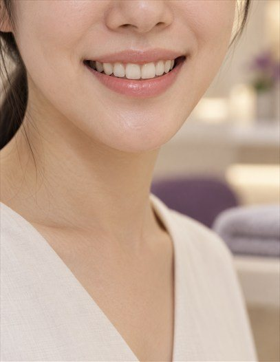
미국 Global사 미세현미경
AREUM SPECIAL 02
치과 의사는
눈에 보이는 것만 치료 할 수 있습니다.
그래서 아름결치과는 20배 더 정확한 진료를 위해
대학병원급 장비인 미세현미경을 3대 보유하고 있습니다.
미세현미경은 진료부위를 최고 20배율 까지 확대할 수 있어
더 정확하고 섬세한 심미 진료가 할 수 있습니다.
AREUM SPECIAL 02
치과 의사는 눈에 보이는 것만
치료 할 수 있습니다.
그래서 아름결치과는 20배 더 정확한 진료를 위해
대학병원급 장비인 미세현미경을 3대 보유하고 있습니다.
미국 Global사 미세현미경
미세현미경은 진료부위를 최고 20배율 까지 확대할 수 있어
더 정확하고 섬세한 심미 진료가 할 수 있습니다.
해외 현미경치의학회 정회원인 김진수 대표원장은
미세현미경에 대한 높은 진료 역량과 노하우를 갖추고 있어 미세현미경을 활용한
심미 진료에서 더 완성도 높은 결과를 만들어 냅니다.
MICRO SCOPE
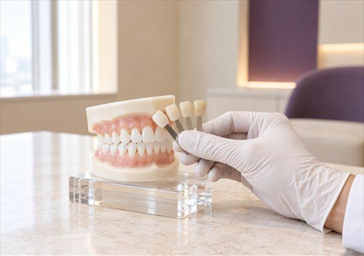
해외 현미경치의학회 정회원인 김진수 대표원장은
미세현미경에 대한 높은 진료 역량과 노하우를 갖추고 있어
미세현미경을 활용한 심미 진료에서 더 완성도 높은
결과를 만들어 냅니다.
MICRO SCOPE
RESIN
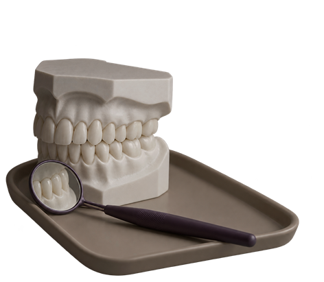
RESIN 01
레진은 일반적인 선입견과 달리
높은 강도를 견딜 수 있고 치아색과 비슷하기 때문에
다양한 치과치료에 적용할 수 있습니다.
레진(복합레진 Composite resin)은 유기기질과 무기필러를 이용
치아와 비슷한 강도와 색상을 띄는 치과용 수복재료로 충치진료로 치아를 보충해야 하는 경우
또는 앞니가 파절되거나 벌어진 경우 등 다양한 케이스에 활용되고 있습니다.
특히 심미적으로 중요한 앞니가 손상된 경우
자연스럽고 심미적으로 탁월한 레진 진료를 추천드립니다.
RESIN 01
레진은 일반적인 선입견과 달리
높은 강도를 견딜 수 있고 치아색과
비슷하기 때문에
다양한 치과치료에 적용할 수 있습니다.
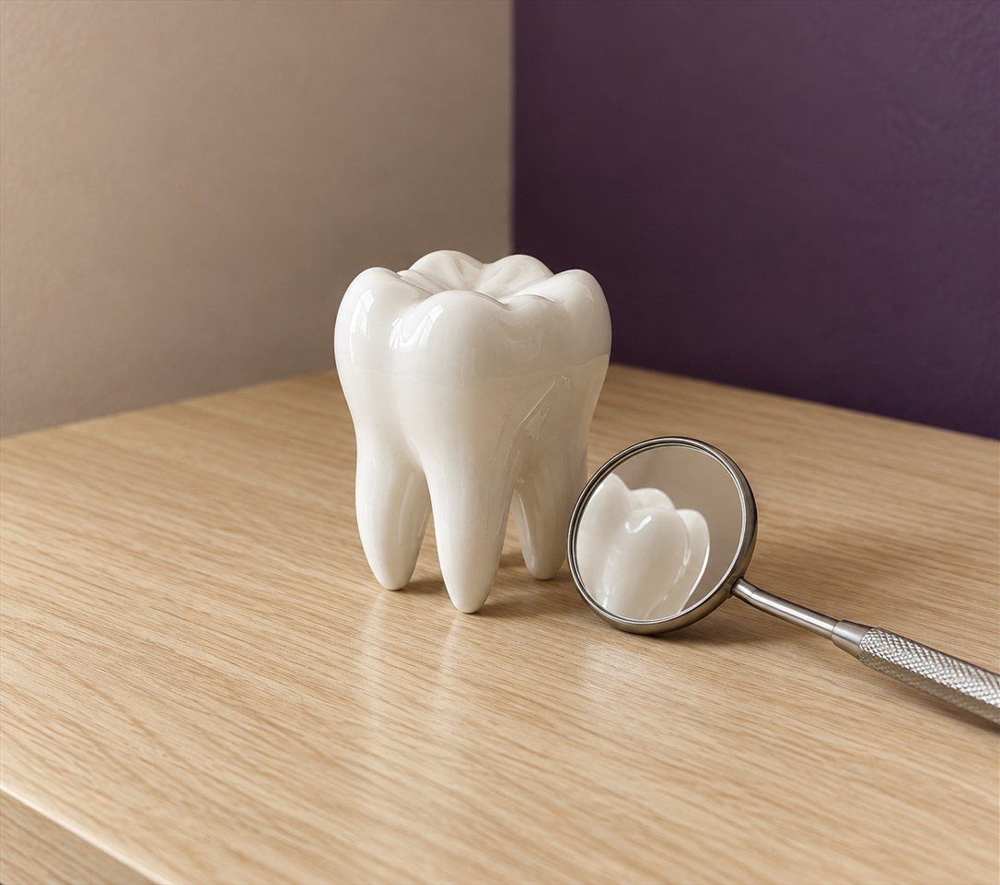
레진(복합레진 Composite resin)은 유기기질과 무기필러를 이용
치아와 비슷한 강도와 색상을 띄는 치과용 수복재료로
충치진료로 치아를 보충해야 하는 경우 또는 앞니가 파절되거나
벌어진 경우 등 다양한 케이스에 활용되고 있습니다.
특히 심미적으로 중요한 앞니가 손상된 경우
자연스럽고 심미적으로 탁월한
레진 진료를 추천드립니다.
RESIN 02
레진은 자연치아를 최관한으로 보존할 수 있기 때문에
많은 치과 의사들이 선호하는 치료방법으로 안내합니다.
RESIN 02
레진은 자연치아를 최관한으로 보존할 수
있기 때문에 많은 치과 의사들이
선호하는 치료방법으로 안내합니다.
우수한
심미성
자연치아
보존
다른 보철보다
저렴
변색, 파손이
적음
짧은
시술 시간
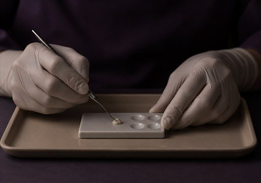
RESIN 03
아름결치과의 레진 진료 진정성
아름결치과의 레진 진료는 10년 넘게 레진/심미 진료를 연구하고 강의한
김진수 대표원장이 하나부터 열까지 직접 책임 진료합니다.
RESIN 03
아름결치과의 레진 진료 진정성
아름결치과의 레진 진료는 10년 넘게 레진/심미 진료를
연구하고 강의한 김진수 대표원장이 하나부터 열까지
직접 책임 진료드립니다.
RESIN 04
본래 치아처럼 편안한 아름다움,
아름결치과 레진 심미 진료
LAMIANTE
라미네이트는 치아에 해롭다?
- 아닙니다!
치아 삭제가 적은 라미네이트는
부작용이 거의 없는 좋은 심미 진료입니다.
아름결치과는 개원한 2013년부터 치아 삭제를 최소한으로 하는
라미네이트를 해오고 있습니다.
충분한 상담과 정밀한 진단으로, 최소한의 치아삭제로 라미네이트가
가능한 경우에만 라미네이트를 추천해 드립니다.
LAMIANTE
라미네이트는 치아에 해롭다?
- 아닙니다!
치아 삭제가 적은 라미네이트는
부작용이 거의 없는 좋은 심미 진료입니다.
아름결치과는 개원한 2013년부터 치아 삭제를
최소한으로 하는 라미네이트를 해오고 있습니다.
충분한 상담과 정밀한 진단으로, 최소한의 치아삭제로
라미네이트가 가능한 경우에만 라미네이트를 추천해 드립니다.
LAMIANTE
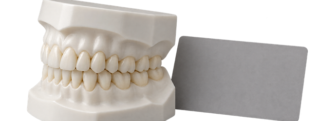
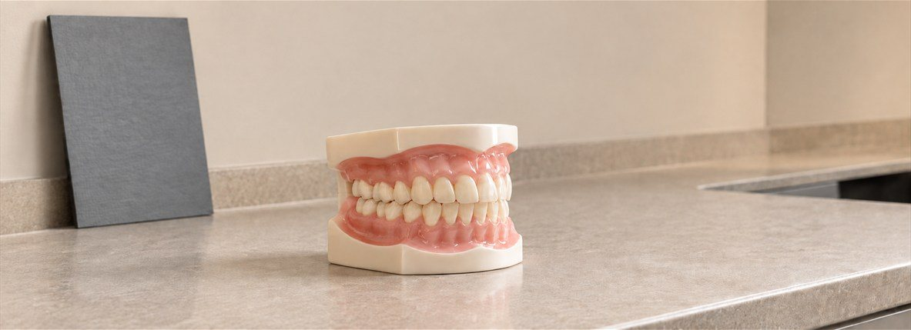
아름결치과는 통합 치의학 전문의가
포괄적인 치료계획을 활용해 필요한 치주, 교정치료를
직접 꼼꼼하게 시행드립니다.
Before & After
전문가는 결과로 증명드립니다.
세심하게 완성하는 자연스러움으로 완성된
레진/심미 진료 케이스를 직접 확인하세요.
01 20대 여성 ㅣ 벌어진 앞니 레진 진료
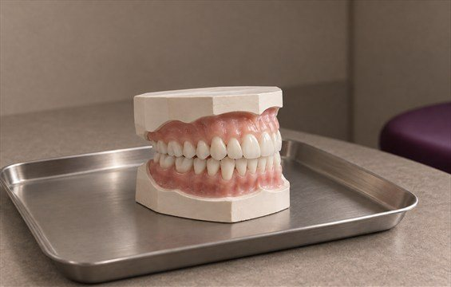
2021.03.27
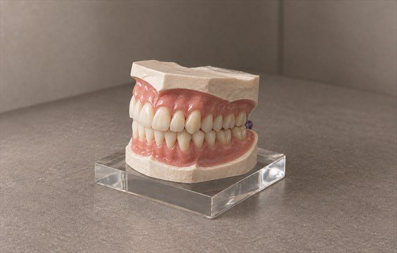
2021.03.27
02 30대 여성 ㅣ 사고로 부러진 앞니 레진 진료
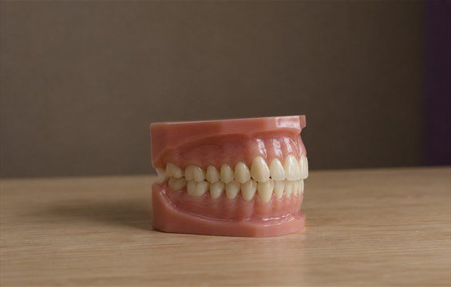
2021.06.30
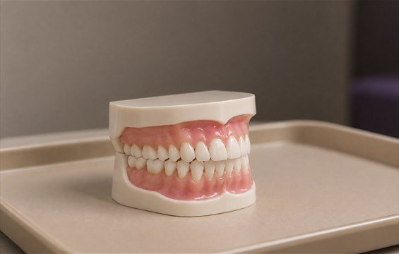
2021.06.30
03 30대 여성 ㅣ 기존 레진 변색으로 인한 레진 재진료
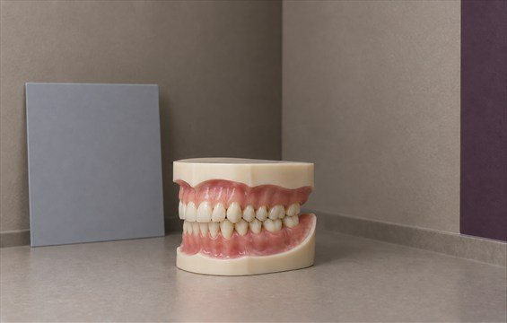
2020.12.23
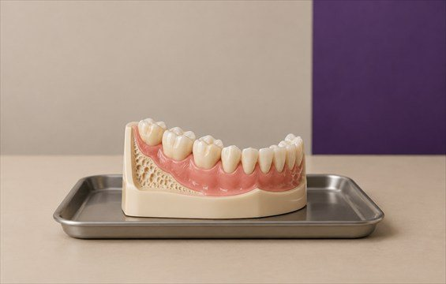
2021.01.20
04 30대 여성 ㅣ 충치로 부러진 앞니 크라운 & 레진 진료
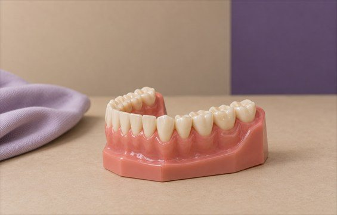
2021.01.06
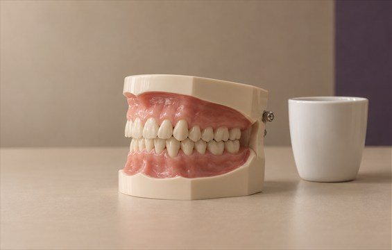
2021.02.04
05 30대 여성 ㅣ 기존 라미네이트 착색으로 인한 재진료
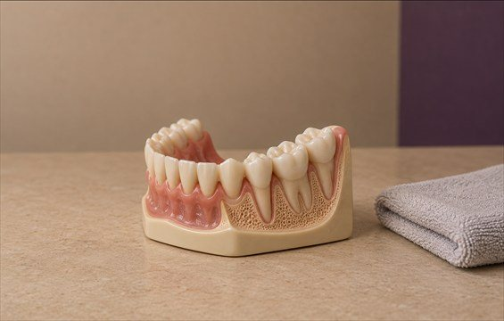
2020.12.11
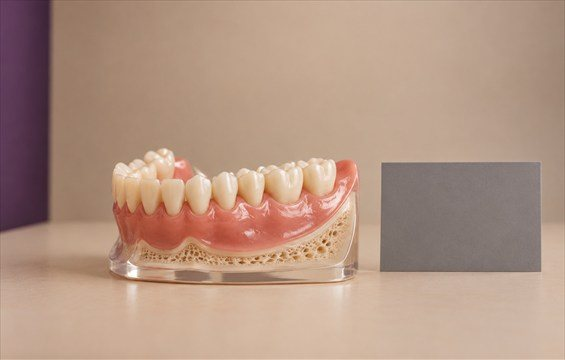
2020.12.23
06 30대 남성 ㅣ 라미네이트 재진료
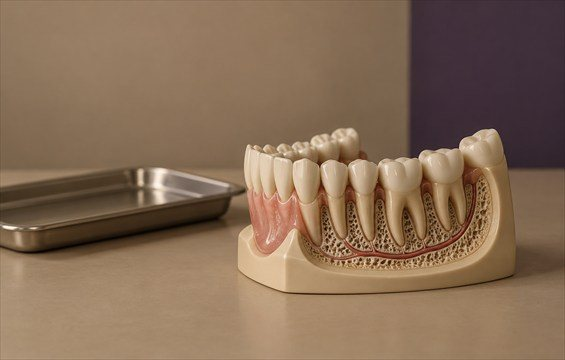
2019.12.10
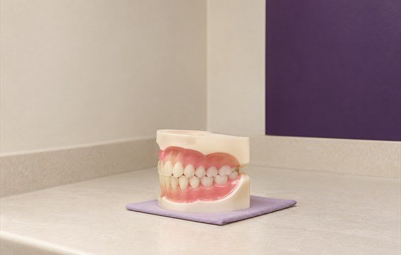
2020.04.04
모든 치료사례 전후사진은 내원하신 분의 동의하에 촬영되었습니다.
모든사진은 동일 내원하신 분의 전후모습을 촬영하였으며, 사진의 밝기조절 외에 임의 수정이 없음을 알려드립니다.
모든 치료는 부작용의 우려가 있기때문에 의사와의 충분한 상담후에 치료가 진행이루어집니다.
모든 치료사례 전후사진은 내원하신 분의 동의하에 촬영되었습니다.
모든사진은 동일 내원하신 분의 전후모습을 촬영하였으며, 사진의 밝기조절 외에
임의 수정이 없음을 알려드립니다. 모든 진료는 부작용의 우려가 있기때문에
의사와의 충분한 상담후에 치료가 진행이루어집니다.
Q & A
심미 진료에 대한 궁금증
아름결치과가 풀어드립니다.
치료 직후부터 정상적인 식사를 해도 이루어집니다. 다만, 자연 치아도 부러질 수 있는 정도의
상식적인 무리만 하지 않으면 이루어집니다.
치료 직후부터 정상적인 식사를 해도 이루어집니다.
다만, 자연 치아도 부러질 수 있는 정도의
상식적인 무리만 하지 않으면 이루어집니다.
특별히 신경 쓴 레진 치료(충분한 광중합, 면밀한 표면 연마) 이후 변색은 거의 없습니다.
혹시 불의의 외력에 의해서 치아에 상처가 나서 착색이 일어난다면, 치과에서 간단한 연마로 원상회복될 수 있습니다.
특별히 신경 쓴 레진 진료(충분한 광중합,
면밀한 표면 연마) 이후 변색은 거의 없습니다.
혹시 불의의 외력에 의해서 치아에 상처가 나서
착색이 일어난다면, 치과에서 간단한 연마로
원상회복될 수 있습니다.
교정 선생님과 상의 이후 할 수 있습니다. 교정 치료 이후 남은 공간이나 블랙트라이앵글의 경우는
많은 교정 선생님들이 의뢰를 해주시고 있습니다.
교정 선생님과 상의 이후 할 수 있습니다.
교정 진료 이후 남은 공간이나 블랙트라이앵글의 경우는
많은 교정 선생님들이 의뢰를 해주시고 있습니다.
일부 케이스에는 치아 삭제가 없어도 되는 것은 사실입니다. 저도 제한된 경우에는 무삭제 라미네이트를
시행하고 있습니다만, 극히 일부 경우에 할 수 있습니다. 이는 학계의 컨센서스라고 볼 수 있고,
일각에서 거의 모든 경우에 무삭제 라미네이트가 가능하다고 홍보하는 경우는 비윤리적이라고 판단합니다.
일부 케이스에는 치아 삭제가 없어도 되는 것은
사실입니다. 저도 제한된 경우에는 무삭제 라미네이트를
시행하고 있습니다만, 극히 일부 경우에 할 수 있습니다.
이는 학계의 컨센서스라고 볼 수 있고, 일각에서
거의 모든 경우에 무삭제 라미네이트가 가능하다고
홍보하는 경우는 비윤리적이라고 판단합니다.
재진료는 처음 치료보다 체감상 두배는 어려운 치료입니다. 하지만 재진료가 저의 전문 분야이기 때문에
내원하셔서 상담을 받아보시길 바랍니다. 진료가 왜 잘못되었는지 개선을 위해 뭐가 필요한지 등
치과 전반에 대한 경험과 통찰이 있는 임상가가 재진료를 해야 성공적인 결과를 얻을 수 있습니다.
재진료는 처음 치료보다 체감상 두배는
어려운 치료입니다. 하지만 재진료가 저의
전문 분야이기 때문에 내원하셔서 상담을
받아보시길 바랍니다. 진료가 왜 잘못되었는지
개선을 위해 뭐가 필요한지 등 치과 전반에 관한
경험과 통찰이 있는 임상가가 재진료를 해야
성공적인 결과를 얻을 수 있습니다.
2026 프리미엄 치과 웹 템플릿
※ 본 사이트와 디자인 및 콘텐츠는 저작권법에 의해 보호되며, 무단 복제 및 도용 시 법적 책임을 물을 수 있습니다